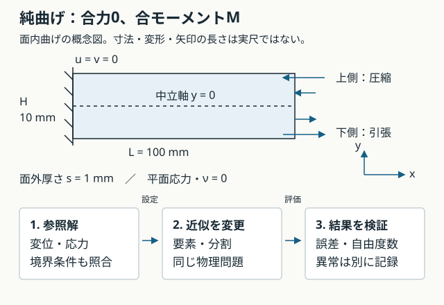

L4-Q01
問い：一様なEIの部材で、先端横荷重Fの場合と端部モーメントMだけの場合では、曲率の長さ方向分布はどう違うか。
解答例と解説
解答例：先端力ではκ(x)=F(L−x)/(EI)と変化し、純曲げではκ=M/(EI)で一定。
解説：この講義のMは右端の分布表面力で与える合モーメント。一定曲率なら二次の変位場を参照解として使え、要素の表現能力を確かめやすい。先端力ケースと同じ荷重問題ではない。
MECHANICAL DESIGN STUDY · LESSON 04
要素の性質を、解の分かる問題で確かめる。物理条件をそろえ、誤差・自由度数・計算状態を比較します。
M2b実装前の講義です。以下は解析式から求めた参照値であり、2D FEMの結果や計算時間はまだありません。

長さ方向x、曲げ深さ方向y、面外方向zの長方形を使います。薄い面外方向への荷重がない、平面応力の面内曲げです。従来の加熱支持板とは別の教育用検証ケースです。
長さL＝100 mm、深さH＝10 mm、面外厚さs＝1 mm、E＝70 GPa、ν＝0、右端の合モーメントM＝0.1 N·mとします。ν＝0は検証用の選択で、実材料の同定値ではありません。
深さHと面外厚さsを区別します。断面二次モーメントは I＝sH³/12 です。
左端x＝0のu,vを固定し、上下面は無荷重。右端の表面力を p_x＝−My/I、p_y＝0 とします。pの単位はPaです。
∫p_x s dy＝0 ／ −∫y p_x s dy＝M
積分区間は−H/2からH/2です。上半分と下半分で力は相殺しますが、モーメントは残ります。
2D連続体節点には回転自由度がありません。各要素の境界形関数Nを使い、分布から整合節点荷重を求めます。
f_e＝∫ Nᵀp s dΓ （Pa × m × m＝N）
節点が増えても、各節点へ同じ数値の力を配るのではなく、同じ表面力を積分します。
κ＝M/(EI)、u＝−κxy、v＝κx²/2
σ_x＝−My/I、σ_y＝τ_xy＝0
ν＝0なら材料則と釣合いを満たし、左端ではu＝v＝0です。右端の応力も指定の表面力に一致します。
| 照合量 | 値 |
|---|---|
| 断面二次モーメント | 8.333333×10⁻¹¹ m⁴ |
| 曲率 | 0.017142857 m⁻¹ |
| 先端中央たわみ ML²/(2EI) | 0.085714286 mm |
| 上下縁の応力の大きさ | 6.000 MPa |
| ひずみエネルギー M²L/(2EI) | 8.571429×10⁻⁵ J |
νだけを変えて、この参照変位を使い続けないでください。ν≠0の純曲げには横ひずみに対応するvのy²項が必要で、左端全体のv＝0と一般には両立しません。
形状・物性・荷重分布・拘束を共有します。ゆがみの比較でも外形を変えず、中間節点の配置規約を記録します。
| 要素 | 要素数 | 節点数 | 自由度数 |
|---|---|---|---|
| T3 | 32 | 27 | 48 |
| Q4 | 16 | 27 | 48 |
| T6 | 32 | 85 | 160 |
| Q9 | 16 | 85 | 160 |
要素数と未知数は違います。同じ自由度数でも近似空間は異なります。次数の効果と、同程度の自由度での効率を分けて評価します。
一様材料・アフィン写像での剛性積分を基準として、T3は三角形1点、T6は3点、Q4は2×2点、Q9は3×3点を初期案とします。非アフィンなゆがみでは積分精度も再確認します。Q4の安定化なし1点積分は異常検出用として扱います。
定数ひずみのパッチテスト、剛体運動、荷重の釣合い、拘束後の剛性、残差を先に確認します。その後、次の学習用初期目標を使います。
純曲げは二次要素が解を含むため、最初から丸め誤差程度で一致する可能性があります。一般的な収束の証拠にはせず、次に曲率が変わる荷重問題を追加します。
時間は未測定です。実装後は同じ環境・ソルバーで組み立て・求解・後処理を分け、準備実行後の複数回の中央値などを記録します。
各問でいったん考え、解答例と解説を開いて確認する。対話で扱った論点を汎用の教材として再構成したもので、個人の回答・成績・実行記録ではない。解答例を読んだことと、自分で説明・実行できたことは別に確認する。
問い：一様なEIの部材で、先端横荷重Fの場合と端部モーメントMだけの場合では、曲率の長さ方向分布はどう違うか。
解答例：先端力ではκ(x)=F(L−x)/(EI)と変化し、純曲げではκ=M/(EI)で一定。
解説：この講義のMは右端の分布表面力で与える合モーメント。一定曲率なら二次の変位場を参照解として使え、要素の表現能力を確かめやすい。先端力ケースと同じ荷重問題ではない。
問い：この検証でPoisson比ν=0を選ぶ理由は何か。
解答例：単純な純曲げ参照変位と、左端全体のu=v=0を両立させるため。
解説：ν≠0では横ひずみに対応するvのy²項が必要になる。参照解が材料則だけでなく、実際に与える拘束も満たすかを確認する。ν=0は実材料に合わせた値ではなく、検証のための設定。
問い：曲げ深さHを2倍にすると、他を固定した断面二次モーメントIは何倍か。面外厚さsではどうか。
解答例：Hを2倍なら8倍、sを2倍なら2倍。
解説：I=sH³/12。2D図面内の曲げ深さと、平面応力モデルの面外厚さは異なる。M0の幅・厚みという名称だけで対応付けず、曲げ軸と断面を確認する。
問い：右端のp_x=−My/Iは力[N]か、それとも表面力[Pa]か。
解答例：単位面積あたりの表面力[Pa]。
解説：N·m×m/m⁴=N/m²となる。境界線に沿う積分では面外厚さsを掛け、面積を作る。整合節点荷重はNの単位になる。
f_e = ∫ Nᵀp s dΓ
問い：右端表面力の合力が0なら、曲げモーメントも0か。
解答例：0とは限らず、この分布ではMが残る。
解説：上側の左向き力と下側の右向き力は相殺するが、モーメントの向きは同じになる。ΣFだけでなくΣ(r×F)も確認する。
∫p_x s dy = 0； −∫y p_x s dy = M
問い：T3からT6へ変え、境界節点が増えたら、各節点に同じ数値の力を与えてよいか。
解答例：よくない。同じ表面力分布を、各要素の境界形関数で積分する。
解説：単純な節点への等分配では合力・合モーメントや仮想仕事が変わる可能性がある。形状だけをそろえても、荷重の与え方が違えば要素の性能比較にならない。
問い：8×2セルのQ4と、同じセルを2分したT3は、全体の自由度数も2倍違うか。
解答例：違わない。この格子では共有節点はともに27、左端拘束後は48自由度。
解説：Q4は16要素、T3は32要素だが、頂点の集合は同じ。左端3節点の各2自由度を拘束すると2×(27−3)=48。要素数と全体の未知数を区別する。
問い：純曲げで二次要素のたわみが最初から一致したら、一般の荷重でも粗いメッシュで十分か。
解答例：一般化できない。
解説：今回は補間空間が参照変位を含む特別なケース。荷重分布・形状・物性・拘束が変われば、解は同じ次数の多項式とは限らない。曲率が変わるケースで収束も検証する。
問い：参照値が0のτ_xyについて、通常の相対誤差を計算してよいか。
解答例：0で割るため使えない。非ゼロの応力尺度で正規化する。
解説：このケースでは最大絶対せん断応力を参照曲げ応力6 MPaで割って報告できる。合反力0も同様にM/Hなどの力の尺度を使う。正規化の方法と単位を記録する。
問い：要素のゆがみだけを調べるとき、外周節点も動かして部品の外形を変えてよいか。
解答例：外形を変えると物理問題も変わるため、基準比較では内部節点だけを動かす。
解説：荷重境界や拘束位置を保持し、中間節点も決めた規約で配置する。T6/Q9では幾何写像への影響も含めて記録し、ヤコビアンと積分精度を確認する。
問い：先端たわみが参照解に近ければ、応力・反力・エネルギーの照合を省略できるか。
解答例：省略できない。
解説：一つの指標の偶然の一致や誤差の相殺があり得る。荷重の釣合い、拘束、応力の評価位置、エネルギー、残差も確認する。節点平均化した応力だけで、要素ごとの差を隠さない。
問い：成立しないケースと、正常に解けたが誤差が許容値を超えるケースは同じ扱いにするか。
解答例：分ける。前者はerrorでランキング外、後者は精度不足として誤差を残す。
解説：品質・拘束・解の成立性を確認してから収束と精度を判定する。時間が短いことや数値が出たことだけで採用しない。M2bではこの状態と入力・メッシュ・ソルバー設定を一緒に保存する。